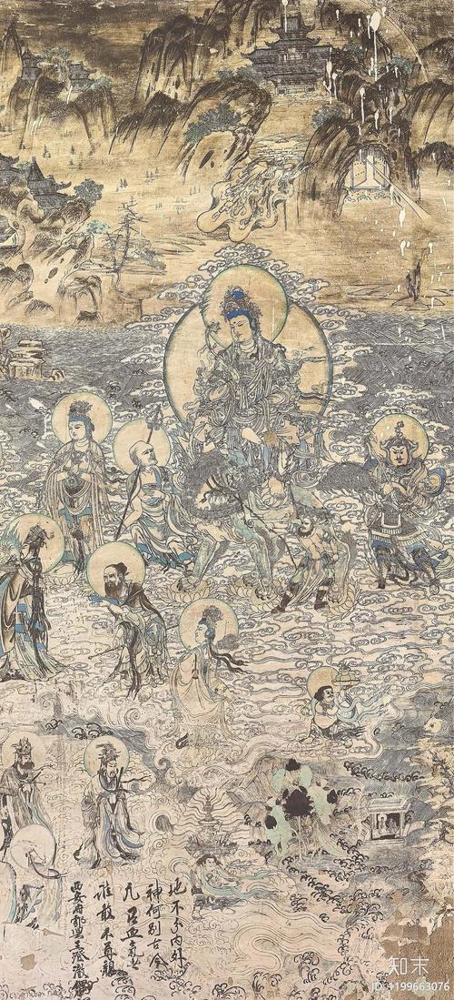

谁在为莫高窟买单
开凿一个洞窟需要大量的人力和财力。出资的人叫"供养人"，他们有权把自己和家人的画像留在窟洞里。
供养人画像通常出现在洞窟入口两侧的下方，位置不显眼，但画得很认真。画像旁边会写上供养人的姓名、官职和供养时间。这些题记是研究敦煌历史的重要资料。
供养人的身份五花八门：有皇帝、有将军、有地方官、有商人、有僧尼，也有普通百姓。最著名的供养人群体是晚唐五代时期统治敦煌的张氏和曹氏归义军家族。他们开凿了大量窟洞，供养人画像的规格也越来越大——从最初的小小人像，发展到和真人等大的全身肖像。
第130窟的都督夫人太原王氏供养像是最著名的供养人画像之一。画中的王氏身着华丽的唐代贵妇服装，身后跟着一队婢女，排场堪比皇后。这幅画不仅是肖像，也是唐代服饰和礼制的珍贵图像资料。

